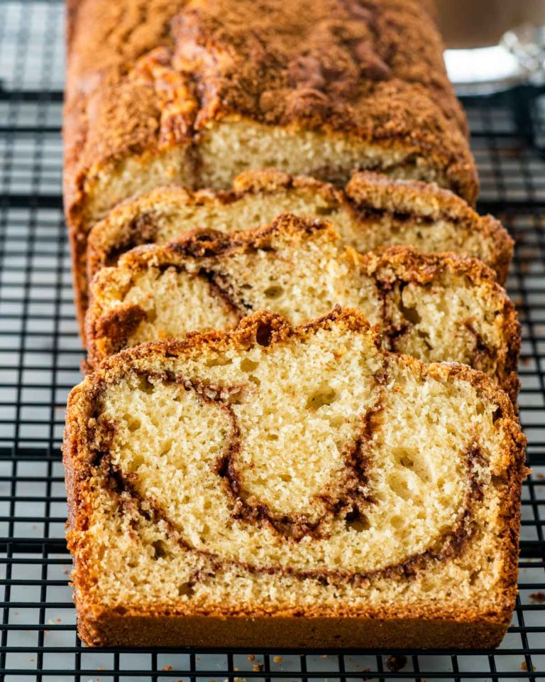

Fırını 325 F dereceye ısıtın. 8 inç x 8 inçlik bir pişirme kabını yağlayın veya pastayı daha kolay çıkarmak için parşömen kağıdıyla hizalayın.
Yumurtaları ayırın ve yumurta sarılarını şekerle hafif ve kabarık olana kadar çırpın. Tereyağı ve vanilya özü ekleyin ve bir veya iki dakika daha çırpmaya devam edin, ardından unu ekleyip tamamen karışana kadar karıştırın.
Sütü yavaş yavaş eklemeye başlayın ve her şey iyice karışana kadar çırpın.
Yumurta aklarını bir karıştırıcıya ekleyin ve sert tepeler oluşana kadar karıştırın.
Yumurta aklarını kek hamuruna ekleyin ve yavaşça katlayın. Yumurta aklarını katlamanın bir başka çeşidi de onları kek hamuruna çırpmak olacaktır, bu çok daha hızlı ve kolaydır. Yumurta aklarını tamamen katlamadığınızdan emin olun, yine de üstte yüzen bazı beyaz parçaları görmek istersiniz.
Hamuru fırın tepsisine dökün ve 40 ila 70 dakika veya üstü hafif altın rengi olana kadar pişirin. Pişirme süresi fırına bağlı olarak büyük ölçüde değişebilir, bu nedenle yaklaşık 40 dakikaya bir göz atın ve nasıl göründüğüne bakın.
Kek soğuduktan sonra üzerine pudra şekeri serpin.
Kahveli Ekmek Tarifi

Kahveli Ekmek İçin Malzemeler
1/2 bardak esmer şeker
2 çay kaşığı tarçın
2 bardak un
1 yemek kaşığıkabartma tozu
Kahveli Ekmek Nasıl Yapılır?
Malzemeleri ve fırını hazırlayın: Fırını önceden 350°F'ye ısıtın ve bir somun tavaya pişirme spreyi sıkın veya tereyağı ile yağlayın. Bir kapta esmer şeker ile tarçını karışana kadar çırpın.
Hamuru hazırlayın: Un, kabartma tozu, kabartma tozu ve tuzu bir kapta birleştirin. Kenara koyun. Başka bir kapta tereyağını toz şekerle rengi açılana ve iyice karışana kadar çırpın. Yumurtaları birer birer ekleyin ve hafif ve kabarık olana kadar karıştırın. Ayran, vanilya özü ve un karışımını yumurta karışımına ekleyin ve iyice karışana ve pürüzsüz olana kadar karıştırın. Not: Hamur normal kek hamurundan biraz daha kalındır. Hamurunuz çok kalınsa biraz daha ayran ekleyin veya çok inceyse biraz daha un ekleyin.
Kahveli keki hazırlayın: Hamurun ⅓'ini hazırlanmış ekmek tepsisine dökün ve ⅓ kahverengi şeker karışımını serpin, kalan hamurla tekrarlayın ve kalan kahverengi şeker karışımını üstüne serpin. 3 kat hamur ve 3 kat tarçınlı şeker elde etmelisiniz.
Pişirin ve soğutun: Somun tepsisini fırına aktarın ve 50 dakika ila 1 saat arasında veya somunun ortasına batırılmış bir kürdan temiz çıkana kadar pişirin. Somun tavasında 5 dakika soğutun, ardından soğutmayı bitirmek için bir tel rafa aktarın.